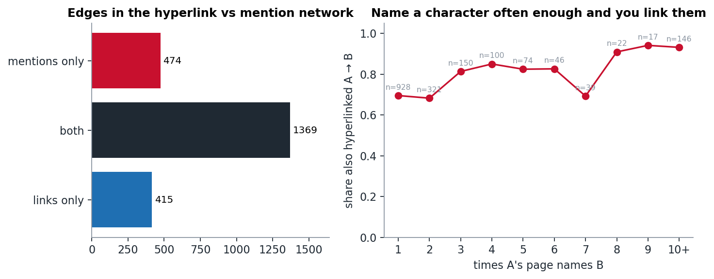
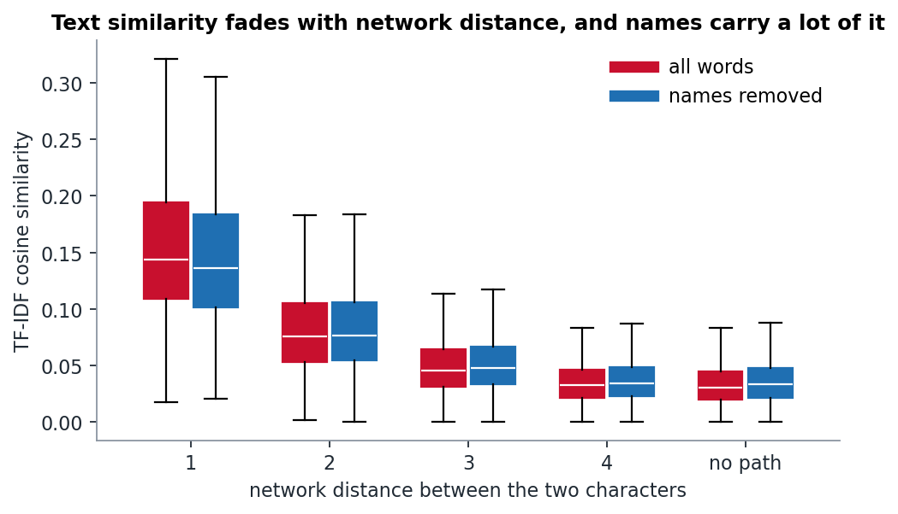
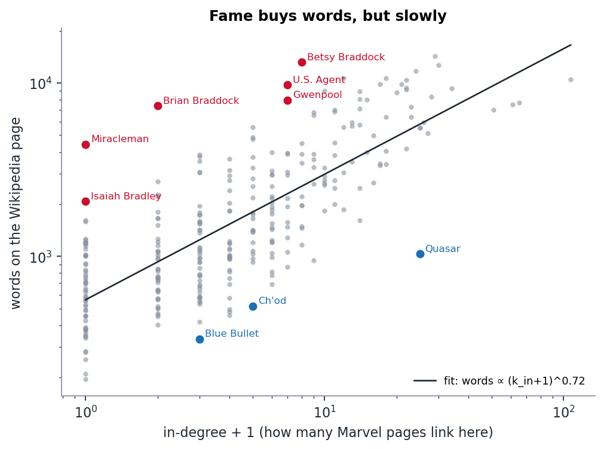
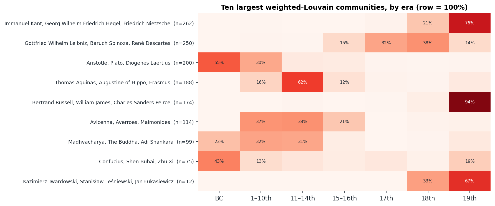
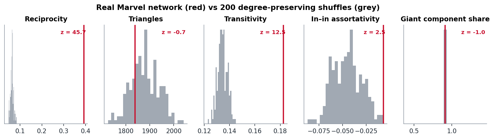

Marvel, Mined
Weekly “Go nuts” posts for 02805 Social Graphs and Interactions, DTU, autumn 2026. One question per week, asked of the same 303 Marvel superheroes (and, in week 4, 1,444 philosophers).
Can text build the Marvel network?
We rebuilt the network from name mentions alone and got 77% of the hyperlinks back. The edges that exist in only one network come down to umbrella pages, comic-book titles and names that are also English words.

Week 6 · NLP IIClose in text, far in the network
TF-IDF says pages that link to each other read alike. The pairs that read alike without linking turn out to share a team, a resurrection or a writer, and removing character names does not remove the writers.

Week 5 · NLP IDoes network fame buy you more words?
Yes, but with steeply diminishing returns. The characters far off the trend show what in-degree misses: a brother who is famous in Britain, a hero lost in a court case, and a codename that several people share.

Week 4 · Communities & backbonesDo weights change the history of philosophy?
We ran Louvain on 1,374 philosophers ten times with link weights and ten times without. Weighting changes the partition less than the random seed does, but a handful of philosophers move for good reasons.

Week 3 · Who matters, and whyTaking the Marvel universe apart
Everyone is at most four clicks from Spider-Man. But to break the network you have to remove far more than Spider-Man, and the order you remove characters in matters more than which centrality you pick.
 Week 2 · Models & null models
Week 2 · Models & null modelsWhat survives the shuffle?
We rewired the Marvel network 200 times while keeping every character's degrees fixed. Reciprocity dies, triangles don't, and one "significant" result turned out to be the same finding counted twice.

Week 1 · NetworksFamous is not the same as chatty
In the Marvel network, the characters everyone links to and the characters who link to everyone are almost entirely different people. And 26 heroes are not connected to the rest at all.